1. Authored asset: treatment versus neutral control
The control keeps the geometry and fixture but sets iridescence: 0 and removes the iridescence map. Compare across fixtures; a single attractive frame is insufficient.
Authored asset maps, iridescence enabled.
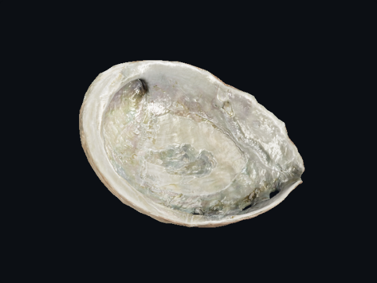
Iridescence zero, map removed.
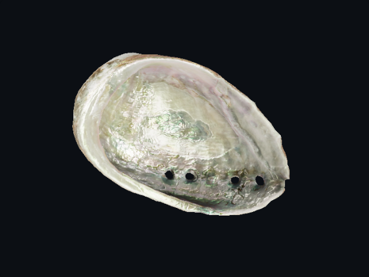
View-angle comparison.
Same fixture, neutral material.
Recorded sweep state.
Same light state, neutral material.
2. Run 7: metalness-path sensitivity matrix
All cells use the generated R-gradient/G-constant diagnostic map. The authored shell row fails the locked automated threshold; the three override rows pass. That ordering isolates sensitivity—it does not rank artistic quality or physical correctness. On narrow screens, scroll this matrix sideways.
| Variant | Neutral | Grazing | Light sweep |
|---|---|---|---|
| Authored: 0.5 + map Automated fail |
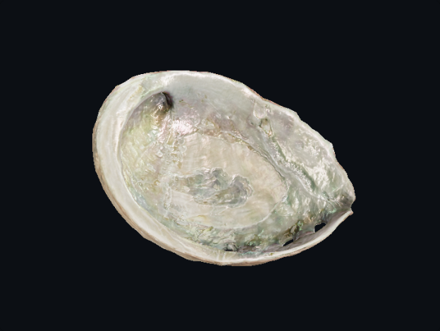 |
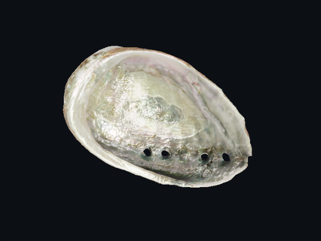 |
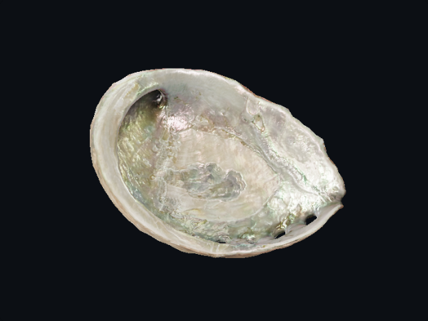 |
| 1.0 + map kept Automated pass |
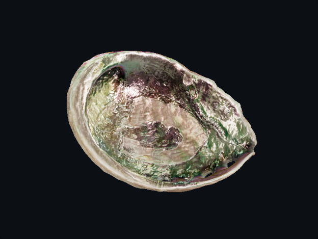 |
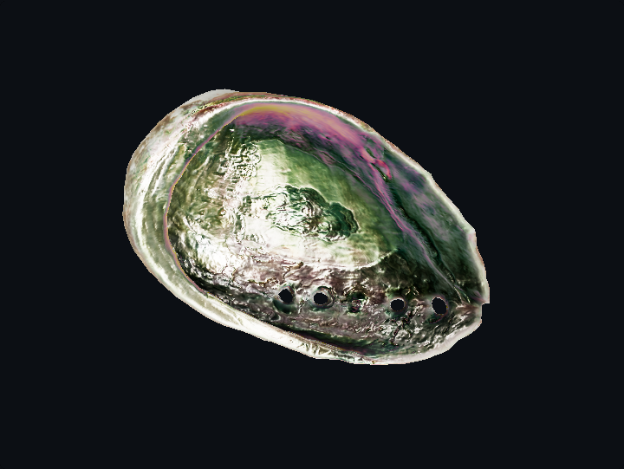 |
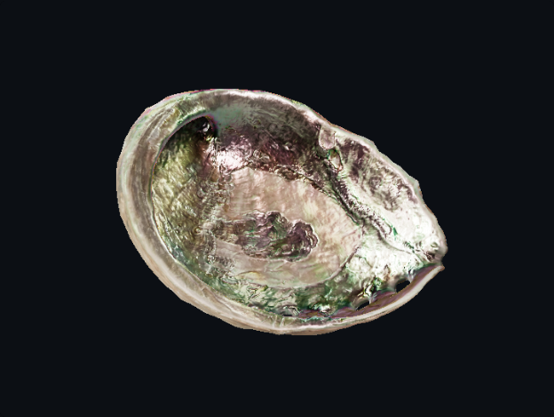 |
| 0.5 + map removed Automated pass |
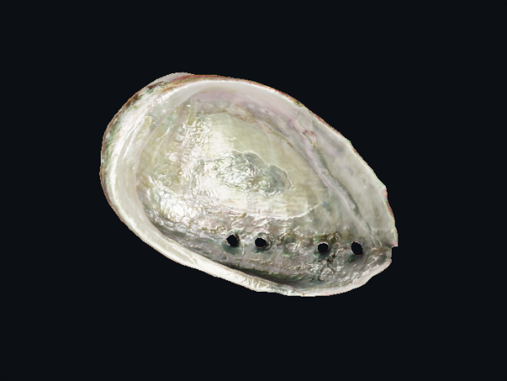 |
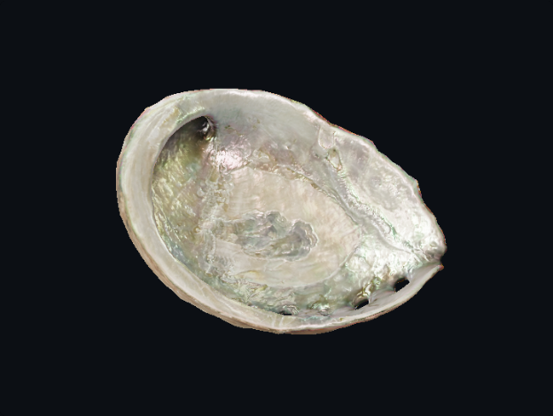 |
|
| 1.0 + map removed Automated pass anchor |
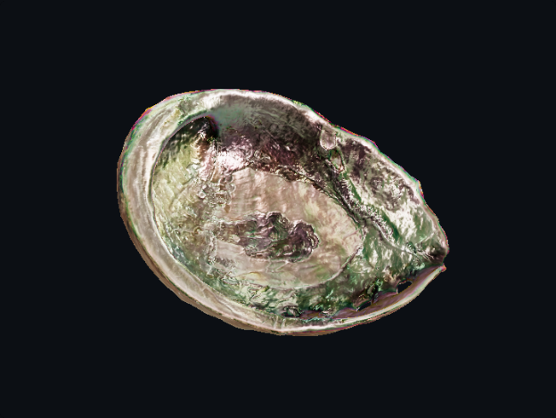 |
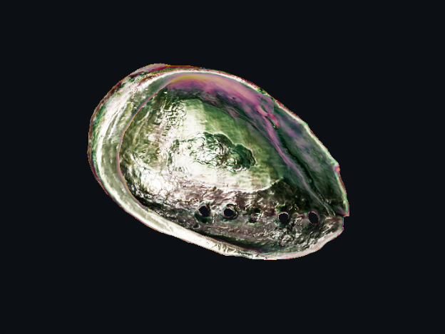 |
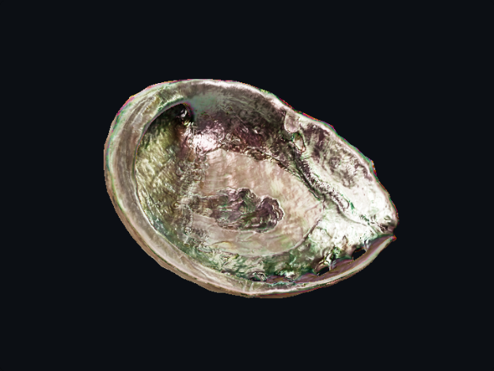 |